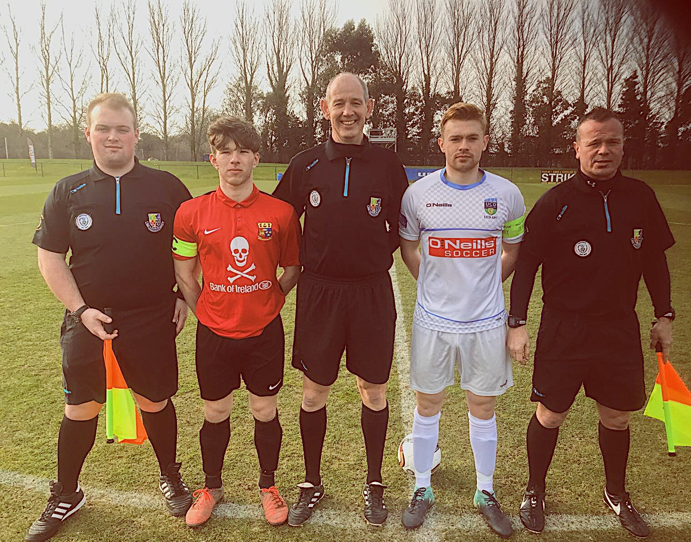

☠Surfing

I began surfing in the autumn when I joined the UCC Surf Club on their trip to Lahinch. A great weekend it was. I had surfed before but got a lot more interested after this trip. I am just back from the winter UCC surf trip in Taghazhout, Morocco. It was an unbelievable experience.The surfing was fantastic and some craic was had also. 80 'surfers' went over and we had an unforgettable week.

⚽Soccer
Active member of the UCC freshers team. Previosuly played for Wilton United but now playing my trade with the college. We are involved in the Munster Junior League, CUFL and we just had the Harding Cup last week. The Harding cup is the big comepition and was held in DCU this year over 4 days. We played NUIG in our first game and we dominated them ending in a 2-0 victory. UCD were next in the semi-finals. UCD were a very good side and had very good players. The game was very tight and ended 0-0 after extra-time. Penalties were next and luckily we advanced to the final after our keeper produced some heroic saves. The final took place on the 24th of February in Tolka Park, the home of Shelbourne Fc. Unfortunately it was Trinity's day and they won the final 1-0. I was lucky enough to captain the side in both the semi-final and final. It was a big honour for me personally and it was a shame the way it ended in the way it did. But overall it was an incredible experience with a great group of players.
📷 Photography
Have a keen interest in photography especially landscape. I learned a lot from my Dad who was a former photographer and he was the reason why I start. Sunsets are my favourite as the colours are extremely vibrant. Sunsets will vary from day to day and that is why I find them so fascinating.